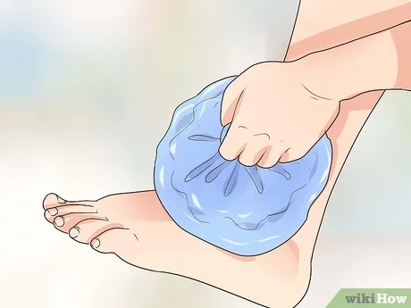
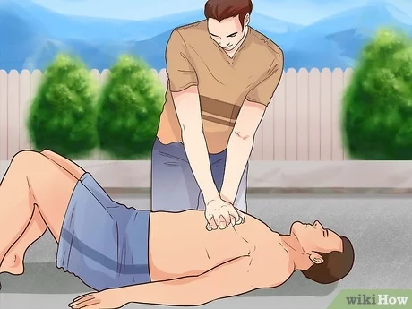

- Keep the injured area still and Do not try to realign the bone or push it back into place
- Apply a cold compress or ice pack to the injured area to reduce swelling and pain

- If the fracture is an open fracture cover the wound with a clean cloth or bandage to prevent infection

- if victim is not responding to questions or reacting to pain perform CPR

- perform chest compressions by pushing hard and fast in the center of the chest. If you are trained and able, perform rescue breaths